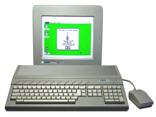

Games
Currently there are no downloads at this moment as I am currently creating a menu system so you only have to download a pack of games.
| Larmers Cant Jump (PICO-8) (2020) |
Coded using: Pico-8 (Lua) |
|
Simple endless runner that you must collect the coins while avoiding the spikes. This was made very hard as everything speeds up when you collect a coin. This had quite a bit of animation for the main character. |
| Space (PICO-8) (2020) |
Coded using: Pico-8 (Lua) |
|
Very simple space shooter that was part of a guide, this was really helpful as it showed me some better ways to use lua tables and effects. |
| Find the Ball (PICO-8) (2019) |
Coded using: Pico-8 (Lua) |
|
Very simple. You must guess what cup the ball is under. I wanted to do move movement/ animation but this turned out harder than I expected. |
| Pipe Faller (PICO-8) (2019) |
Coded using: Pico-8 (Lua) |
 |
This was to be a remake of Pipe Climber but on the Pico-8 instead. An intresting project but not as good as the PipeClimber version. |
| Subhunt (2019) |
Coded using: Love2D (Lua) |
|
Created in Love2D, this was a project that just lost its fun creating but I wanted to get it to a sort of finished state. You control a ship that can move left and right. You can drop a bomb but only one at a time. The enemy subs are firing up at you. Live as long as you can. |
| Paddle Bricks (PICO-8) (2019) |
Coded using: Pico-8 (Lua) |
|
5 Levels to compleate, its an arkinode clone. Created from scratch. |
| Lander (PICO-8) (2019) |
Coded using: Pico-8 (Lua) |
 |
A simple land your lander on the platform game. But make sure you don't land too fast!. |
| Cave (PICO-8) (2019) |
Coded using: Pico-8 (Lua) |
|
First Pico-8 game. Its a endless running and is basically a flappy bird clone. Avoid the top and bottom and get as far as you can. |
| Blocky Bird (2018) |
Coded using: Love2D (Lua) |
 |
Carrying on with using Love2d, As I was playing around with it I ended up creating a flappy bird clone. I am very happy with the result as this was created from scratch and no code was copied from anywhere. Simply press the spacebar to go higher and make it though the pipes. The gap between the pipes gets smaller as you go along. |
| Opposite Quick (2018) |
Coded using: Love2D (Lua) |
 |
I wanted to created another small game in the love2d engine but make something different to what I am used to making. Under 300 lines of Lua code later we have Opposite Quick. You have 25 questions and 3 seconds to decide what to do on each. Do you click or not? |
| Fruity (2018) |
Coded using: Love2D (Lua) |
|
Created in Love2d (Lua coding) this was a first time fun little project to mainly just to learn how the Love engine works and I have to say that I really enjoyed it. Fruity is a very basic fruit machine sim, you have 10 spins and if you can match 2 in a row your get 20 points or all 3 in a row gets you 100 points. |
| Space Shot (2018) |
Coded using: Basic4GL |
 |
Back to basics with some BASIC programming. Using Basic4GL, this little text space game was great fun to program and runs surprisingly fast. Check the youtube video out for more detailed information. You control a little ship at the bottom of the screen. You have to destroy the alien and every-time you do, the game speeds up. |
| Push Back (2018) |
Coded using: GDevelop4 |
|
Created in GDevelop 4, this little game has you trying to get your man from one side of the screen to the other, while avoiding the people coming the other way. If you hit them, they push you back and you lose health. If you lose too much help or you get pushed too far back its game over. |
| Fisshy (2017) |
Coded using: Blender3D |
|
This game has been a hard project to finish due to other things going on. You control an orange fish collecting food, you must avoid big red as he's trying to eat you. Designed to be a low poly style game, this one level game has some features that are interesting. One of the biggest features is that when big red is near you, your hear a heartbeat warning you. |
| MineTest Mod (2017) |
Coded using: Lua |
|
With hours wasted on the game MineTest, I wanted letters so that words could be made in the game. This is a very basic Mod that gives you extra nodes on the creative mode of the game. |
| Lunar Lander (2017) |
Coded using: Click Fusion 2.5 |
|
Based on an old game, Lunar Rescue is a small 10 level game. You have to pilot a space craft and pick up the spacemen one at a time and drop them off at the flag. Try to complete the game with the least amount of crashes. |
| Pipe Climber! (2017) |
Coded using: Click Fusion 2.5 |
 |
Pipe Climber! is a small endless runner game. Get the highest score by missing the spiky guys and collecting the items. Controls are left and right, however your fighting the gravity pull and everything is random. The game speeds up and its all over once you lose all your lifes. |
| EyRec (2017) |
Coded using: Click Fusion 2.5 |
|
EyRec is a small platform game. It Features 3 Levels, you need to collect 5 Records in each level and then get to the flag avoiding any enemy's on the way. You only have one life to complete the game. |
| Space Arena (2017) |
Coded using: Blender3D |
|
Space Arena is the second game created this year. It features 5 levels (the most of any game I've created). With the goal to simply survive and shoot everything. Its a simple game but can be quite hard. |
| Mortar Man 2 (2017) |
Coded using: Godot |
|
Mortar Man 2 is a revamp of the original Mortar Man that was created back in 2004. Its a one or two player game with the simple goal of first one to hit the other wins. |
| Spot The Difference (2016) |
Coded using: Blender3D |
|
Inspired by playing a spot the difference on a tablet. I wanted to see how easy it is to create a similar game. This is the first time that I have created a menu (like the style of MortorMan). The image is moving making it hard to find the differences. There are three puzzles in total all based on Christmas. |
| Tanks (2016) |
Coded using: Blender3D |
 |
This is the first game in many years to have an AI computer player and is the most complex game so far this year. Its a 1 Player game, first to get 5 kills wins. Simple but fun game. Based from the prototype GoldenGuns (the way it shoots). This was also intresting to learn about UV mapping the texture on the game. |
| Frog With A Death Wish (2016) |
Coded using: Blender3D |
 |
This game was created as part of a under 24 hours challenge. It has sound effects and music. The object is to get your frog into a window or door of the building so that he can blow it up! Why you ask? There is no reason or point to the game, so the answer is why not. |
| Gauntlet Run (2016) |
Coded using: Blender3D |
 |
Can you get the crystal and then the portal before the time runs out and the levels water is rising. Avoid rolling/ stamping blocks and mines all in 35 seconds! |
| Bouncing Ball Challenge (2016) |
Coded using: Blender3D |
|
First proper 3D game since playing with Unity. You control a bouncing ball and have to get your way though the course to the end marker without falling to your death. This is only one level but it was the first 3D game that works well and I am very happy with what was created. All the sounds and music were created by myself. |
| Subhunter (2013) |
Coded using: GameMaker 7 (MAC) |
 |
Remake game of the Windows 3.1 game created many years ago. I wanted to see how quick something like this could be made in gamemaker. An enemy sub has entered you area, destroy it before it destroys you ! 2 Player game, player moves there sub up or down and fires to try and hit the other player. |
| Yet Another Pong (2013) |
Coded using: GameMaker 7 (MAC) |
 |
Simple Pong clone for 2 players. Made in Game Maker on the Apple Mac as part of a test of the program to see how it works and also how quickly something could be made. This was created in just two evenings (about 6 hours). Simply keep the ball away from your side of the screen. Who ever lets the ball past them loses. |
| Dodge Challenge 3 (2013) |
Coded using: Unity3D 4 |
|
Made as part of learning Unity3D. This was to see if I could remake a 3D version of a game I made in the past on the Atari ST. Your driving in your taxi down a road with oncoming cars ! You shine your headlights at them but they wont move ! You need to avoid them ! There are 50 cars to avoid with things speeding up as you go along. Good Luck. |
| Mortor Man (2004) |
Coded using: DarkBasic |
|
Two men, with random generated landscapes fire mortars at each other(Based on the classic game scorched earth and Tanks) It has a 1 and 2 player mode (basic AI for the computer) Created this game as it was an entry into a competition. Programmed in DarkBasic Pro for Windows XP. Sadly due to time it wasn't entered into the competition on time. |
| Games in the 1990's |
PC & Atari STe (1990's) |
|  |
In the 90's, a few games created in QBasic and then later QBasic 4.5. Visual Basic Version 3 was used later on. One of the games created in VB3 was Subhunter. This worked very well but sadly over time the source code has been lost. The first games ever created started in STOS on the Atari ST. Dodge Challenge 1 & 2 were created using this. It was mouse controlled avoiding the oncoming cars. This was a top down view game and took months to create.
Coded using: STOS, AMOS, VB 3, QBasic and more... |